Executamos obras e serviços técnicos para clientes públicos e privados com gestão integrada, controle físico-financeiro rigoroso e foco em performance operacional.
A Markat Engenharia atua na execução de serviços técnicos especializados em engenharia civil, manutenção industrial e montagem de estruturas metálicas, com sede em São Gonçalo (RJ) e atuação regional.
Com experiência em projetos industriais, corporativos e institucionais, entregamos soluções com alto padrão técnico, organização operacional e foco em resultados consistentes — para clientes do setor privado e para órgãos e prefeituras do setor público.
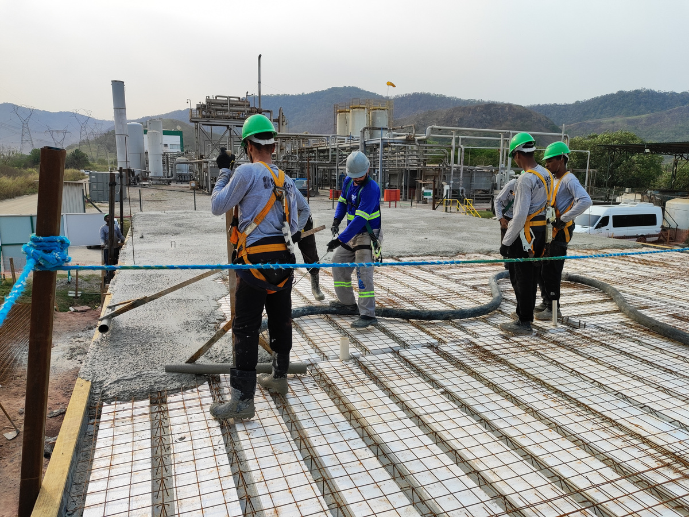
Do projeto industrial à obra institucional, cobrimos toda a cadeia técnica necessária para manter sua operação segura e eficiente.
Fabricação, montagem e ajustes em campo para galpões, coberturas e obras de grande porte.
Inspeção, manutenção corretiva e preventiva para operação contínua e segura.
Apoio civil, mecânico e elétrico para projetos e operações de alta exigência técnica.
Melhorias, adaptações e retrofit para adequar espaços às necessidades operacionais.
Planejamento, execução e controle em todas as etapas com eficiência e transparência.
Monitoramento rigoroso de custos e recursos para garantir resultados sólidos.
Identificação, avaliação e prevenção de riscos para proteger pessoas e resultados.
Estrutura própria e parceiros estratégicos prontos para atender com agilidade.
Experiência técnica e gestão especializada para entregar projetos desafiadores com excelência.
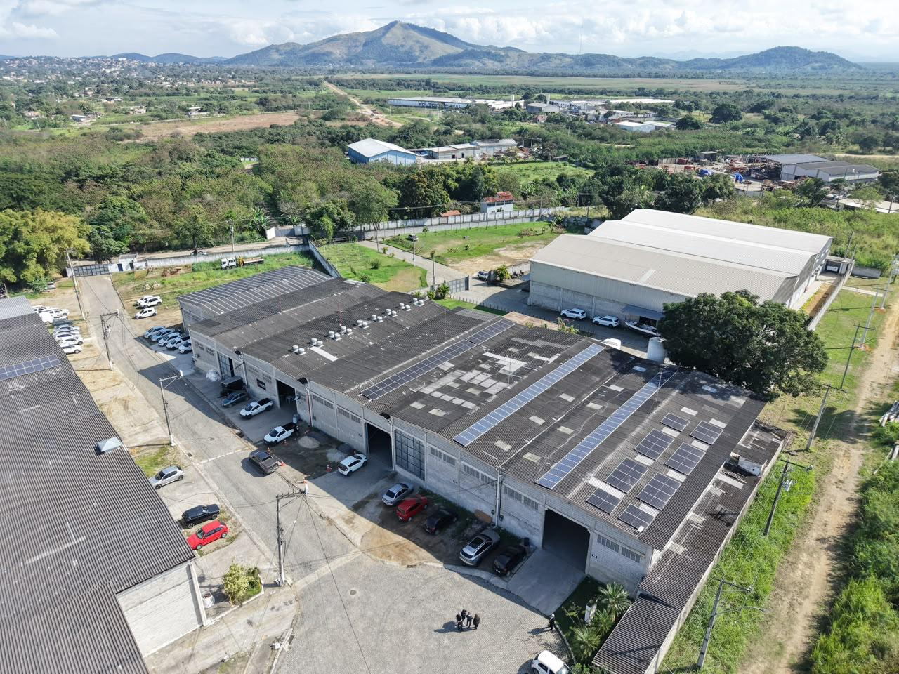
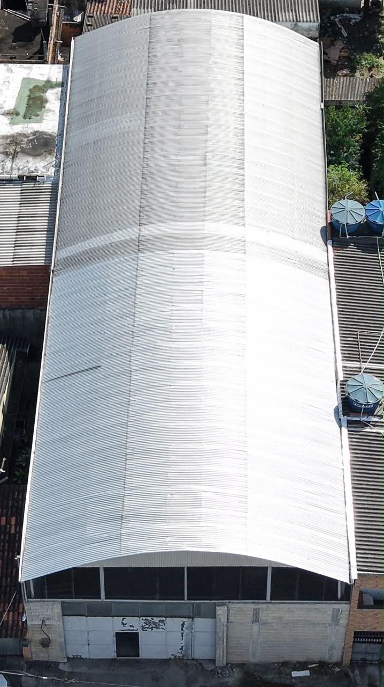
Prevenção, procedimentos e disciplina operacional em todas as frentes de obra.
Conformidade com padrões e requisitos técnicos aplicáveis a cada projeto.
Planejamento, inspeções e registro de atividades em toda a execução.
Execução com padrão técnico e materiais adequados a cada finalidade.
Sabemos que órgãos públicos e empresas privadas avaliam um fornecedor de engenharia de formas diferentes. Por isso, endereçamos diretamente as principais dúvidas de cada público.
Histórico comprovado de entregas para prefeituras e órgãos públicos, com organização documental e operacional compatível com processos licitatórios.
Gestão enxuta, comunicação direta e foco em resultado — para operações que não podem parar.
Oferecer soluções de engenharia com foco no cliente, construindo relações sólidas e entregando resultados com excelência técnica, segurança e responsabilidade.
Ser reconhecida no mercado regional como referência em organização, qualidade e confiabilidade, com cultura de colaboração e alta satisfação dos clientes.
Obras entregues com rigor técnico em segmentos industrial, institucional e de saúde.
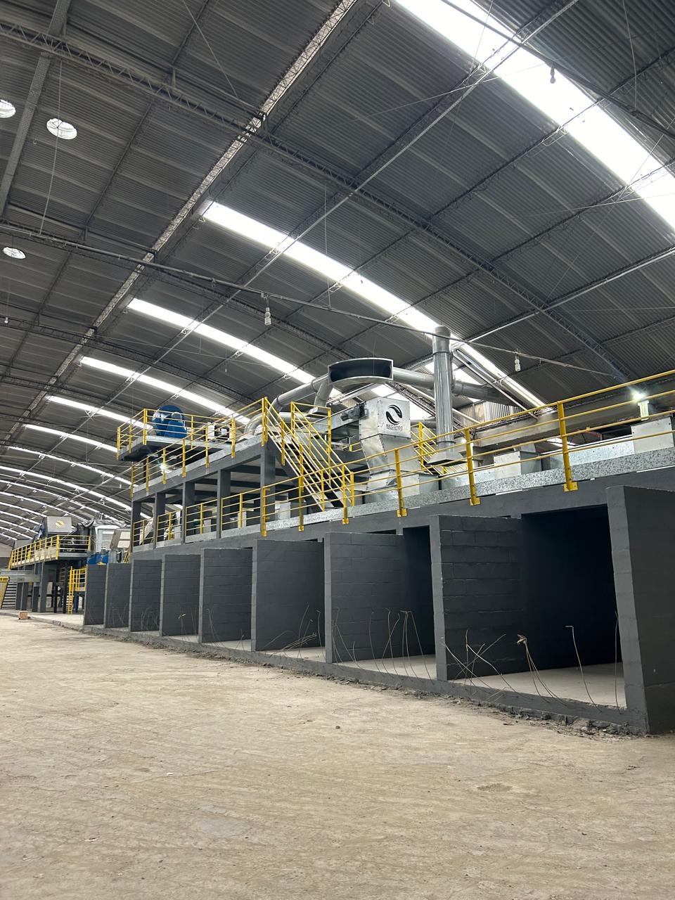
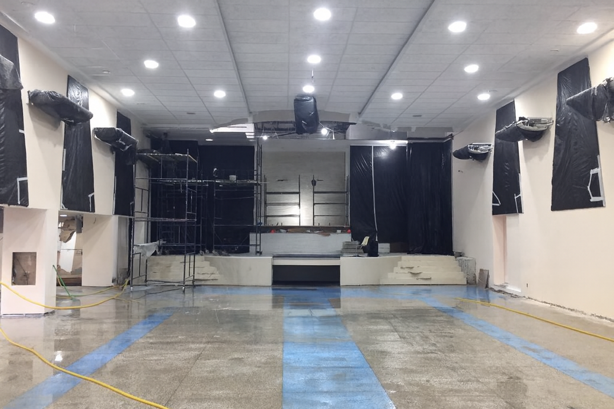
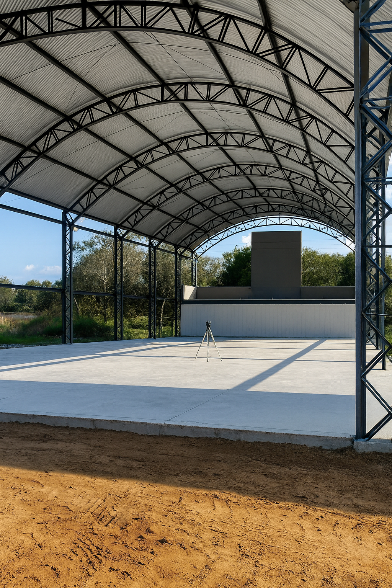
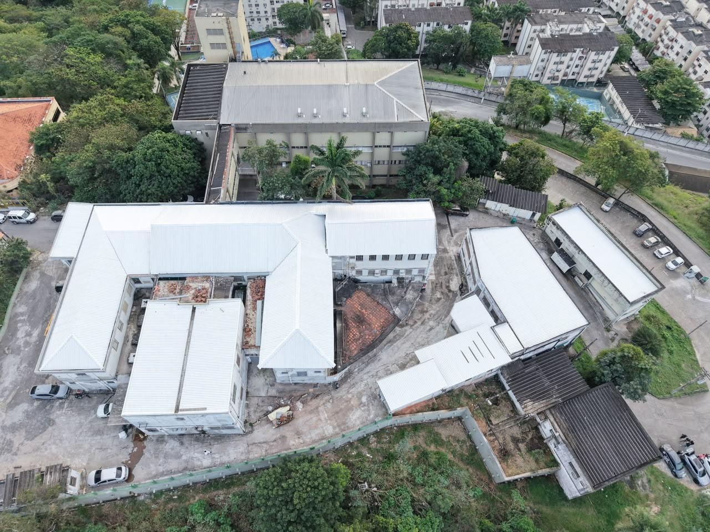
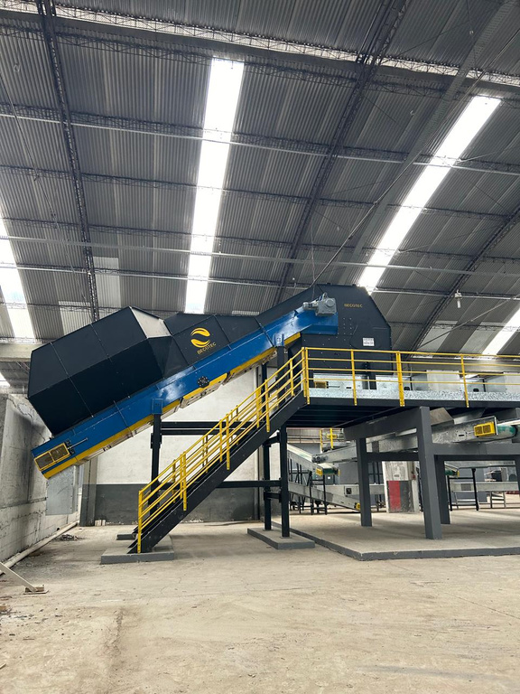
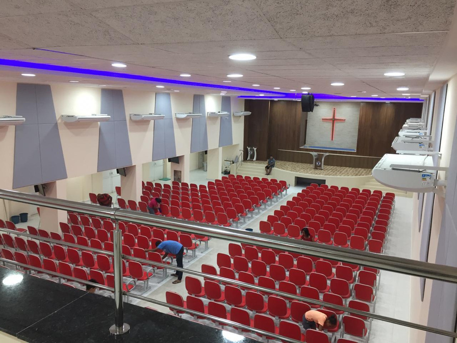
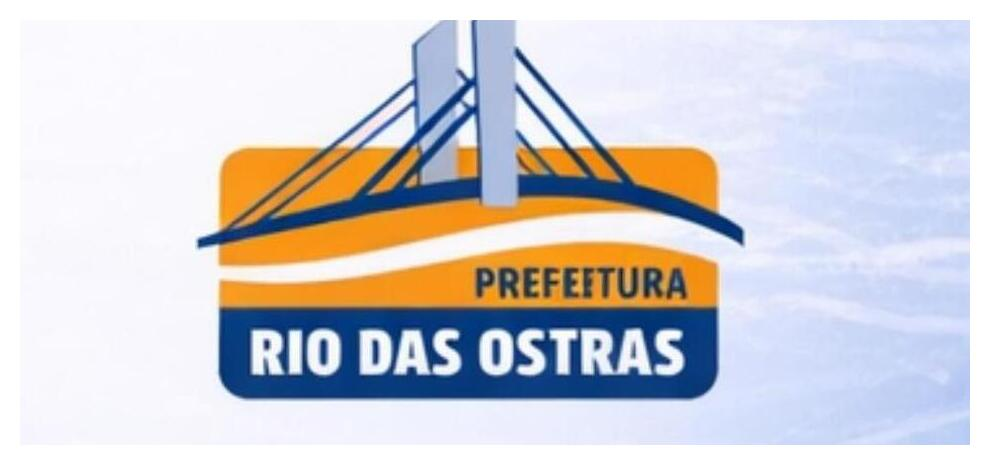
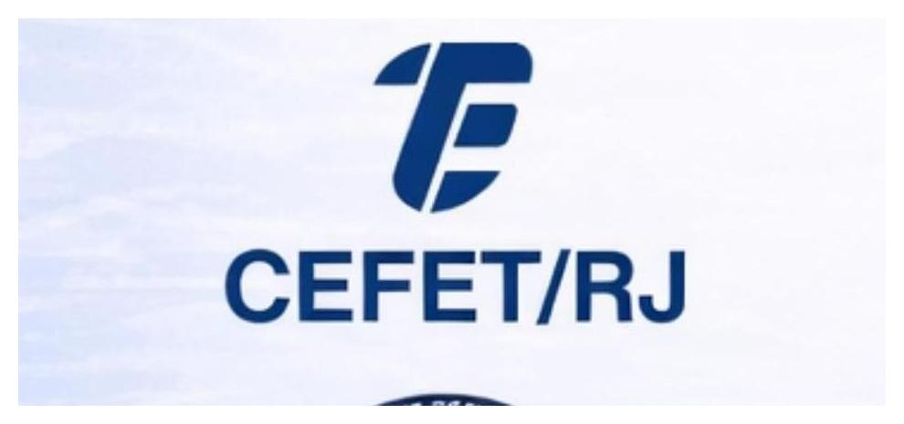
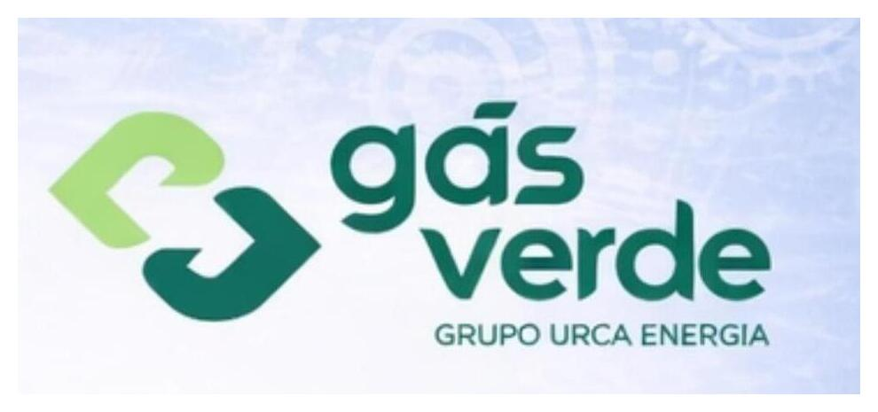
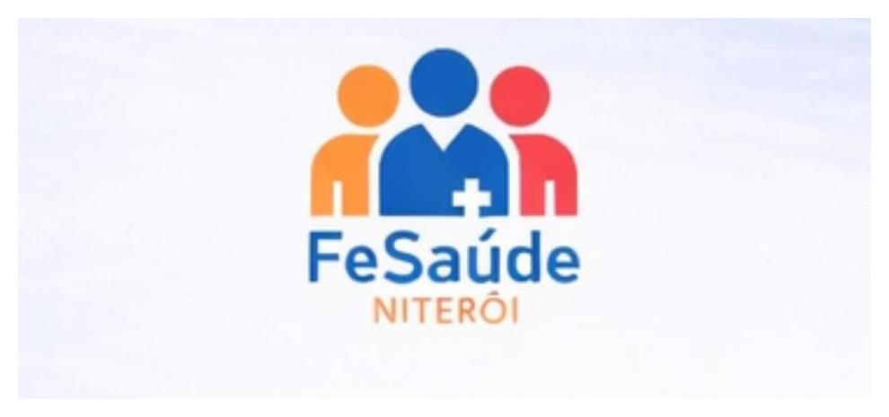
"A reputação é construída em entregas, não em promessas."
Atendemos clientes públicos e privados com propostas técnicas objetivas. Envie sua demanda e retornamos com uma análise inicial.